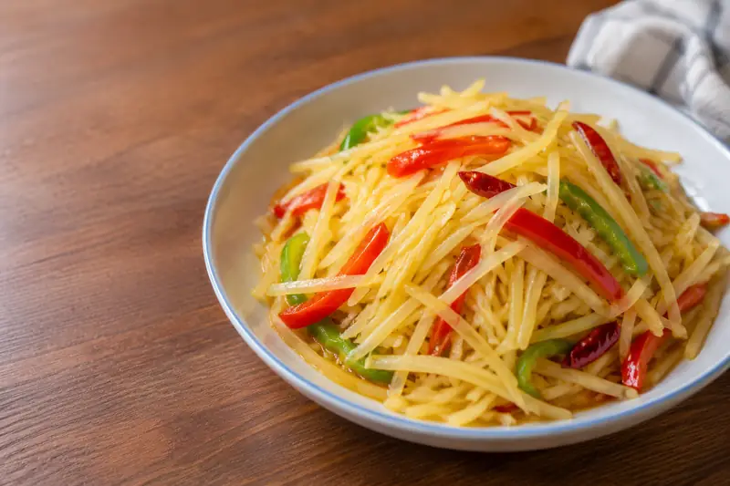

Vegetable素菜 · Northeastern Chinese东北
Hot and Sour Shredded Potatoes酸辣土豆丝
The dish that tests basic Chinese knife and wok skills: cut fine, soak well, cook fast. Good shredded potatoes are crisp, more like a vegetable than mash. Two potatoes from a big Costco bag make a plate.考验中餐基本功的一道菜：切得细、泡得透、炒得快。好的土豆丝是脆的，像在吃蔬菜而不是土豆泥。Costco 一大袋土豆，切一盘只要两个。

Ingredients食材
- Potatoes土豆 500 g · 2 medium potatoes, cut into fine matchsticks2 个中等土豆，切细丝
- Bell peppers彩椒 50 g · a quarter green bell pepper, in strips1/4 个青椒，切丝
- Dried chili干辣椒 3 g · 4 dried chillies, snipped干辣椒 4 个，剪段
- Sichuan peppercorn花椒 1 g · a dozen Sichuan peppercorns花椒十几粒
- Garlic大蒜 10 g · 3 cloves, sliced3 瓣，切片
- Rice vinegar米醋 22 g · 1.5 tbsp white vinegar (black vinegar works, darker)白醋 1.5 汤匙（陈醋也可，颜色深一些）
- Salt盐 4 g · about 2/3 tsp约 2/3 茶匙
- Canola oil菜籽油 28 g · 2 tbsp2 汤匙
- Green onions大葱/小葱 10 g · 1 stalk, cut into lengths1 根，切段
Weights are as bought, before trimming or peeling. Costco pack sizes and availability vary; see each ingredient page.重量为买回来的原重（去皮去骨之前）。Costco 规格与有无随时变化，点食材名看详情。
Method做法
- Peel the potatoes, slice 2 mm thick, then cut the slices into fine matchsticks.土豆去皮，先切 2 毫米薄片，再切成细丝。
- Rinse the shreds in cold water until it runs clear, then soak 10 minutes in fresh water.土豆丝泡冷水，抓洗到水变清，换水再泡 10 分钟。
- Drain thoroughly; the drier the better.捞出沥干，越干越好。
- Heat the wok until smoking, add the oil, fry the Sichuan pepper on low until fragrant and remove it.锅烧到冒烟，下油，小火放花椒炸香后捞出不要。
- Add the chillies and garlic for 10 seconds.下干辣椒和蒜片炒 10 秒。
- Turn the heat to high, add the potato and pepper and toss quickly for a minute.转大火，倒入土豆丝和青椒丝快速翻炒 1 分钟。
- Splash the vinegar down the side, add the salt and toss 30 seconds until just cooked, then add the green onion and serve.沿锅边淋醋，撒盐，再翻 30 秒到土豆丝断生，下葱段出锅。
Keys to success成功要点
- Washing off the surface starch is what keeps them crisp; unwashed, they clump and turn floury.洗掉表面淀粉是脆的关键，不洗会粘成一团、发面。
- Splash the vinegar onto the hottest part of the wok; the acid helps the potato stay crunchy.醋要在锅最热的时候沿边淋入，醋酸让土豆丝保持爽脆。
- Keep it under 2 minutes and take it off while there is still bite.炒的时间不超过 2 分钟，土豆丝断生还带点脆就出锅。
Common problems常见失败与补救
- The potatoes stuck and clumped土豆丝粘锅、成坨
Starch not washed off or not drained. Rinse twice more and pat dry before cooking.没洗干净淀粉或没沥干。多洗两遍，用厨房纸吸干再下锅。 - Too thick to cook through丝太粗、炒不熟
Use the coarse side of a julienne grater; for thick shreds add 2 tbsp water and cover for 30 seconds.刀工不熟练可用刨丝器的粗孔；粗丝可以加 2 汤匙水盖盖焖 30 秒。
Watch it done视频参考
Xiao Gao Jie's hot and sour potatoes from her cooking basics series; four minutes, over 1.7 million views.小高姐「烹饪基础系列」的酸辣土豆丝，4 分钟，播放一百七十多万。
Chef Wang Gang's home-style hot and sour potatoes; under three minutes, over 1.6 million views.王刚的炝炒、酸辣土豆丝家常做法，不到 3 分钟，播放一百六十多万。
Videos load only when you tap them (youtube-nocookie). Creators are credited; we do not host their videos.点了才加载视频（youtube-nocookie）。署名原作者，本站不托管视频。
Nutrition营养
| Energy热量 | 226 kcal |
| Protein蛋白质 | 3.9 g |
| Fat脂肪 | 9.6 g |
| of which saturated其中饱和脂肪 | 0.8 g |
| Carbohydrate碳水化合物 | 32 g |
| Fibre膳食纤维 | 3.4 g |
| Sodium钠 | 529 mg |
Moderate sodium钠中等 Sodium tiers: under 345 mg lower, 345-689 mg moderate, 690 mg and above high (this site's tiers; 15% of the 2,300 mg daily reference = 345 mg).钠分档：低于 345 mg 较低，345–689 mg 中等，690 mg 及以上偏高（本站分档；345 mg ＝ 每日参考 2300 mg 的 15%）。
Computed from the Canadian Nutrient File (Health Canada) with the weights above; oil and sauces are counted in full. Real dishes differ.按加拿大营养素数据库和上面的重量计算；油和酱汁按全量计入，实际会略低。
Good to know适合 / 需注意
- About 529 mg sodium per serving (about 23% of the daily reference), moderate; keep the other meals light that day.每份钠约 529 mg（约 23% 每日参考），属中等；同一天其他餐尽量清淡。
- Contains chilli; reduce or leave it out for children and anyone who avoids heat.含辣，不吃辣的人和小朋友可减量或不放。
Potato plays the vegetable here, so serve a little less rice with it; drop the chillies and pepper for a mild vinegar version.土豆在这里当蔬菜吃，同一顿饭的米饭可以少一点；不吃辣就去掉干辣椒和花椒，改叫醋溜土豆丝。